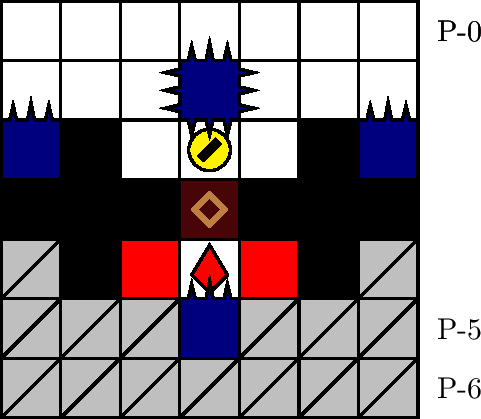
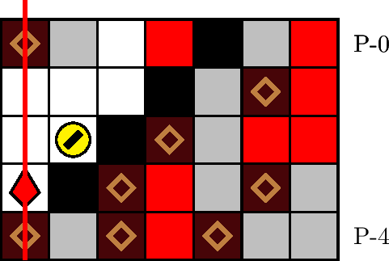

一般指針
バリアを犠牲に


指針
極めて低寿命（25 カウント以下）のときは，バリアの保持を無視して潜行し，犬の深度以降のザクロを取得します．
解説
低寿命は，それ自体老衰の危険を高めるのみならず，操作の焦りによって事故を誘発します．前提として，（特に後期において）ステージ上のザクロは基本的に取得し，低寿命に陥らないよう寿命管理に注意するべきです．
バリアは老衰によって消滅します．特に，老衰までにバリアを消費しても消費しなくても，老衰後にバリアは残りません．そこで，寿命が極めて少ないときは，事故によってバリアを消費してでも，ザクロの取得を目指すことが推奨されます．このとき取得するザクロは，犬の深度以降に位置するものに限ります．犬の深度以前に位置するザクロを取得するには，その落下を待たなければならず，潜行を継続するよりも極めて迂遠です．またこの際，ザクロの取り逃しを避けるために，急降下は推奨されません．
寿命が極めて少ないことの目安は，寿命が 25 カウント以下であることです．寿命が 25 カウント以下の間は，老衰を予告する音が鳴ります．
典型例を 2 つ挙げます:
- 700 m型のエリア・バリケード: エリア・バリケード（図 3.6.3.1）を標準状態で事故なく通過するには，狭窄の塊 P-(3, 0) を 2 回に渡って吸引する必要がありました（「エリア・バリケード」を参照）．しかし，低寿命かつバリア状態時は，直上の四針の刺突判定を回避せずに塊を吸引し続けるべきです: 実際，もとの指針ではザクロを取得する前に老衰する恐れがあるうえ，そのまま老衰すると結局バリアを取得しなかった状況と等しくなります．バリアを消費してザクロを取得すれば，残機を消費することなく潜行を継続できます．（なお，狭窄の通過は 2 回目の刺突が起こる前までに行います．通過が 2 回目の刺突に間に合わなければ，吸引間隔が長すぎなので，より短くなるよう調整します．）
- 1100 m型のエリア・左右階段: 極めて低寿命かつバリア状態時，エリア・左階段（図 3.6.3.2）またはエリア・右階段の狭窄直下に塊が出現した際は，一度レーザーの予告をやり過ごしてから，急いで潜行してザクロの取得を目指します．その後，可能ならば落下ブロックを回避します．特にレーザーが狭窄列に予告されたときは，老衰しそうでも潜行は推奨されません: このときに潜行すると，犬は照射と圧迫の両方の死亡判定を受ける危険があり，その場合どちらの死亡判定を先に受けても死亡します．特に，犬が透明石の中にいても照射判定は無効化されません．なお，待機による老衰と潜行による二重事故の危険性はトレードオフであり，最終的な選択は都度の判断に任されます（理論的には与えられるであろう比較的詳細な判断基準は，明示することでかえって混乱を招くと思われます）．